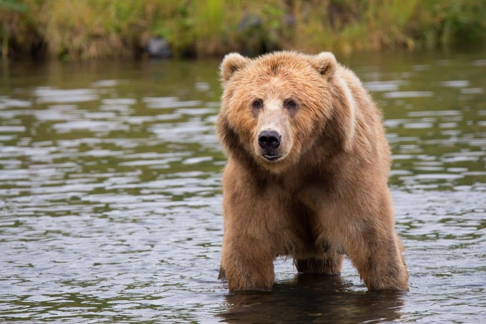

Bear

Click on the picture for a step-by-step guide
Interesting facts about bears:
- One way to identify a brown bear is by the hump at the top of its shoulder.
The hump is made of muscle and helps the bear dig a den. No other extant species of bear has this hump.
- They can cover short distances at speeds of up to 50 km/h.
- At birth, bear cubs are blind and naked.
- Bears have a particularly good nose. Their sense of smell enables them to sniff food at a distance of several kilometres.
- The brown bear is the largest predator still living on the continent of Europe.